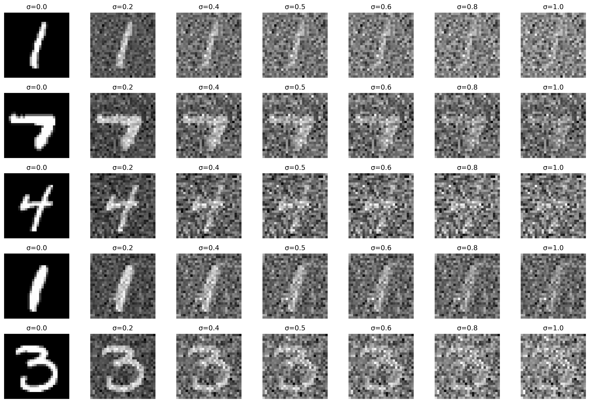
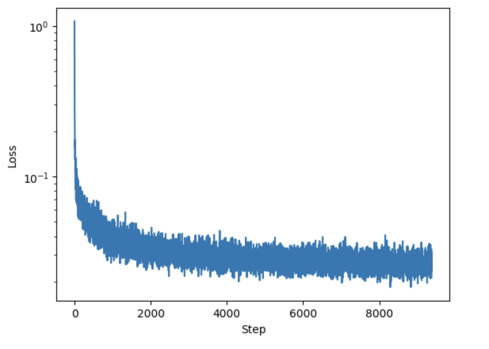
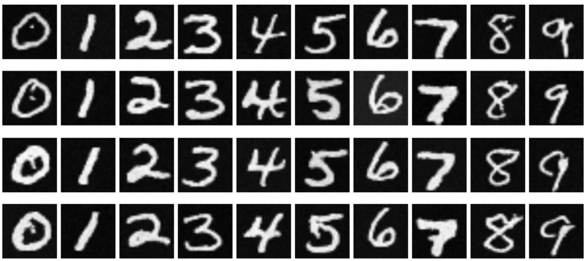
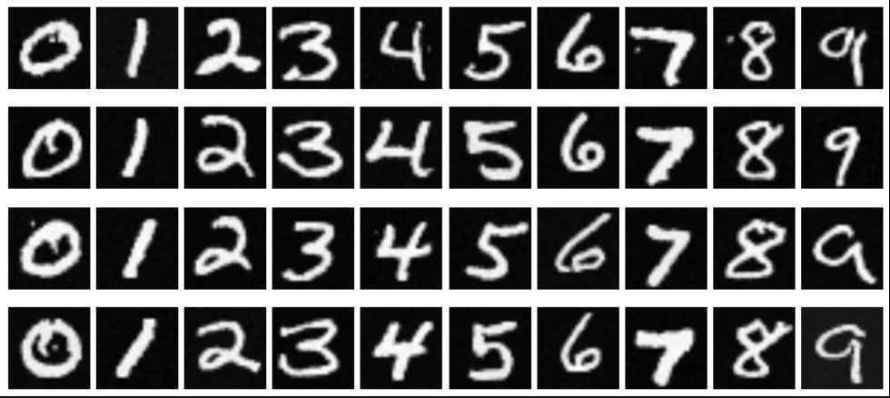

This part of the project focuses on implementing diffusion models from scratch using the MNIST dataset. We first build a single-step denoising UNet model that learns to map noisy images back to their clean versions. Then we implement a full Denoising Diffusion Probabilistic Model that performs iterative denoising through multiple timesteps. To control the generation process, we implement time conditioning and class conditioning while using the UNet architecture as the backbone.
In Part 1, we build a single-step denoising model using a UNet architecture. We start by implementing the UNet architecture with various convolutional and upsampling/downsampling blocks, then we train it to minimize the L2 loss between the denoised output and the original clean image. The model is specifically trained on images with noise level σ = 0.5, and then we evaluate its performance on both this noise level and other noise levels for generality.
The image above is a visualization of the noising process in the process of training the denoiser that maps a noisy image to a clear iamge.
Training loss curve of the denoiser.
Sample results on the test set after the first and the 5-th epoch.
Sample results on the test set with out-of-distribution noise levels after the model is trained.
In Part 2, we implement a full diffusion model (DDPM) that gradually denoises images over multiple timesteps. Instead of trying to remove all noise at once, this model learns to predict and remove noise iteratively. The UNet is modified to include time conditioning, allowing it to know which step of the denoising process it's performing. The model is also trained using a variance schedule (β) that controls how noise is added and removed at each timestep. We also add class conditioning, which allows the model to generate specific MNIST digits by conditioning the generation process on the desired digit class.
Training loss curve of the class-conditioned denoiser.
|  |  |
Sampling results for the class-conditioned UNet for 5 and 20 epochs.